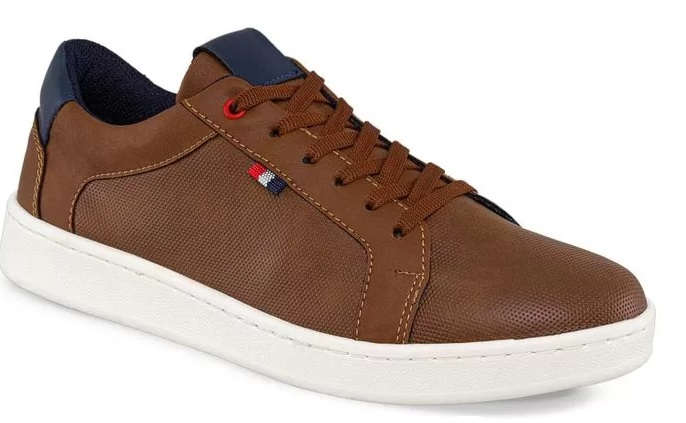
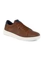
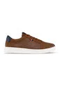
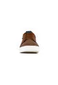

Tenis Mathew Miel Para Hombre Croydon
$144.900




Calzado ideal para usar en ocasiones especiales en las que quieres ser práctico y al mismo tiempo sentirte cómodo ¡No te quedes sin los tuyos! Elaborados en sintético, forro textil, suela en pvc. hecho en colombia. 2 meses de garantía. Si deseas saber cuál es tu talla, consulta la Tabla de tallas en las imágenes de esta publicación. La Garantía tendrá cobertura a partir de la fecha de entrega del producto, los tiempos de garantía se expresan en días calendario. Sesenta (60) días los productos de calzado, sean de línea o promociones, y cinco (5) días de garantía para las luces del calzado que las tengan. No son motivos de Garantía: Rasgones, raspones, ruptura de materiales, así como de partes que conforman el zapato como lo son tacones, suelas, tapas, cremalleras y demás accesorios del zapato ocasionado por el mal uso del producto. Los cambios en el color y tonalidad que sean naturales del material del zapato. Pliegues o rugosidad ocasionadas por la flexión del empeine. Productos que ya hayan sido manipulados por zapaterías, talleres de calzado u otro tipo de terceros, así como también daños ocasionados por arreglos y limpiezas inadecuadas.